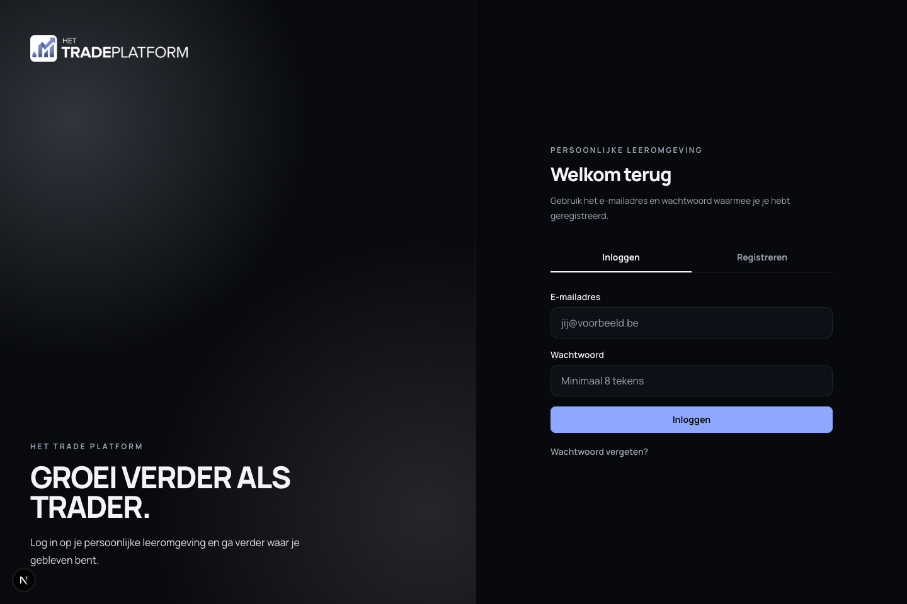
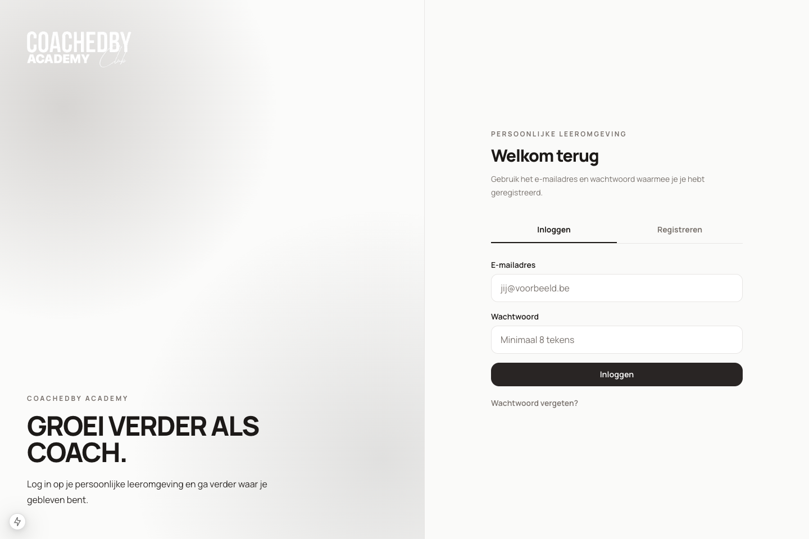

We halen jullie kennis uit de praktijk
We brengen in kaart wat nieuwe medewerkers moeten kennen en filmen de juiste mensen in de studio of op locatie.
Custom Onboarding Academy
Wij filmen jullie interne kennis, bouwen er een onboarding academy rond en voegen een AI-mentor toe die medewerkers begeleidt tot ze operationeel klaar zijn.
Gebouwd op ervaring met platformen zoals Het Trade Platform en CoachedBy Academy.


Nieuwe medewerkers krijgen uitleg tijdens drukke shifts, leren van verschillende collega's en vinden belangrijke info terug in losse documenten. Daardoor duurt het langer voor iemand zelfstandig meedraait en blijven managers dezelfde vragen beantwoorden.
Training verschilt per locatie of trainer.
Nieuwe medewerkers vergeten wat mondeling werd uitgelegd.
Managers verliezen uren aan dezelfde herhaling.
Er is weinig zicht op wie echt klaar is.
Standaarden worden pas duidelijk nadat er fouten gebeuren.
De verborgen kost zit in managerstijd, fouten, trage ramp-up, inconsistente kwaliteit en medewerkers die afhaken voordat ze goed ingewerkt zijn.
Als je elke maand nieuwe mensen opleidt, betaal je kennisoverdracht telkens opnieuw tenzij je ze omzet naar een systeem.
We zetten jullie kennis om in een branded academy met video, examens, checklists, progress tracking en een AI-mentor. Zo krijgt elke medewerker dezelfde basis en ziet management wie klaar is voor de praktijk.

Teamleads zien waar iemand vastzit en sturen gericht bij.
Wat doe ik als de klant een allergie meldt tijdens de lunchshift?
Volg eerst de allergiechecklist. Herhaal de allergie hardop, verwittig de shiftlead en gebruik alleen de goedgekeurde productinformatie uit module 04.
Geen losse chatbot, maar begeleiding op basis van goedgekeurde kennis.
We brengen in kaart wat nieuwe medewerkers moeten kennen en filmen de juiste mensen in de studio of op locatie.
Video wordt een leertraject met modules, lessen, examens, checklists en begeleiding op basis van jullie eigen kennis.
Managers volgen voortgang op, zien wie klaar is en optimaliseren het traject op basis van eerste gebruikersdata.

Belangrijke kennis zit niet langer verspreid over documenten, chats en hoofden. Ze wordt een systeem dat traint, toetst en opvolgt.
Iedereen krijgt dezelfde uitleg, ongeacht vestiging, shift of trainer.
Managers weten wie de kennis beheerst en wie het gedrag in de praktijk toepast.
Vragen worden beantwoord zonder dat een manager telkens moet tussenkomen.
Teamleads zien wie klaar is, wie vastzit en waar extra begeleiding nodig is.
Onze aanpak bouwt verder op bestaande leerplatformen zoals Het Trade Platform en CoachedBy Academy, met modules, video delivery, examens, voortgangsmeting, adminbeheer en AI-ondersteuning.
Nee. Jullie hebben de kennis al in het bedrijf. Wij structureren, filmen en vertalen ze naar een platform.
Nee. Een LMS is software. Wij leveren strategie, opname, contentstructuur, platform, AI-mentor en launch.
We beperken jullie input tot workshops, feedbackmomenten en opnameblokken. De uitvoering ligt bij ons.
Ja. Content kan per functie, locatie, team of access level ingericht worden.
We bekijken hoe nieuwe medewerkers vandaag worden ingewerkt, waar kennis verloren gaat en welke academy structuur het meeste impact zou hebben.